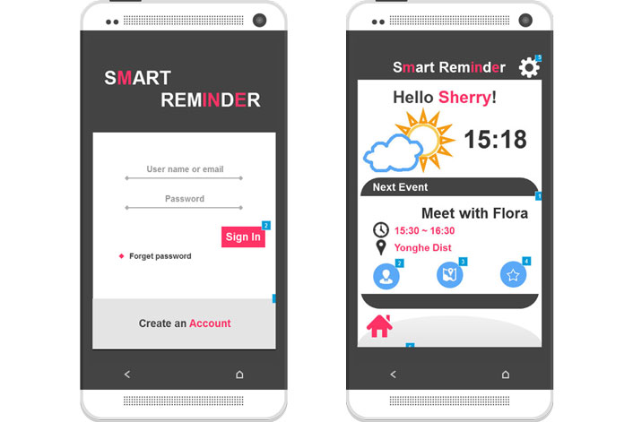
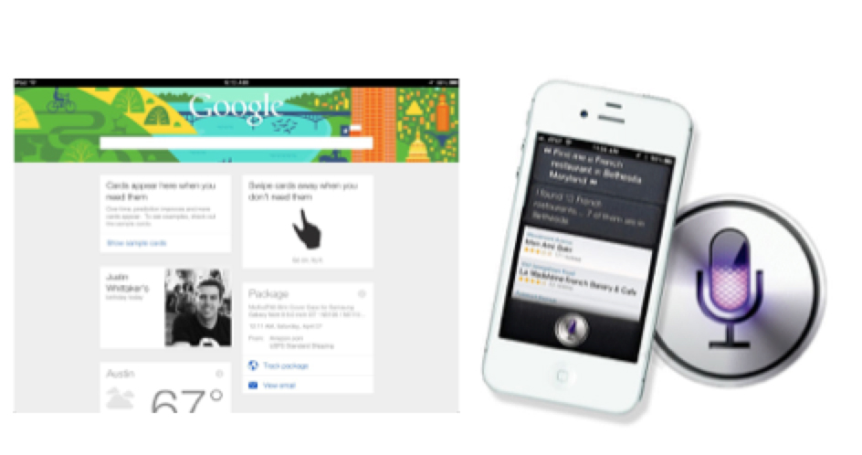
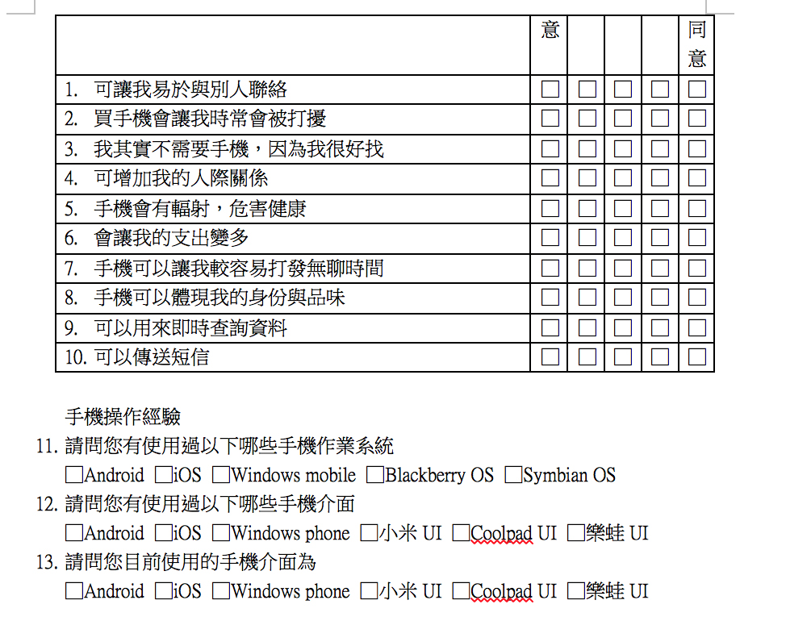
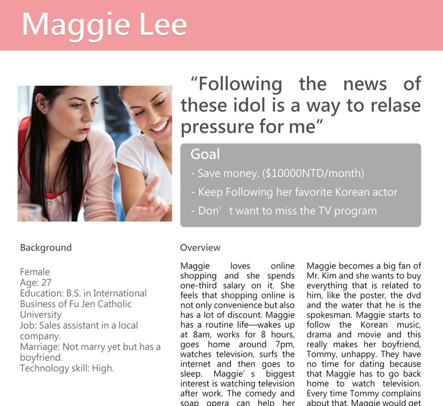
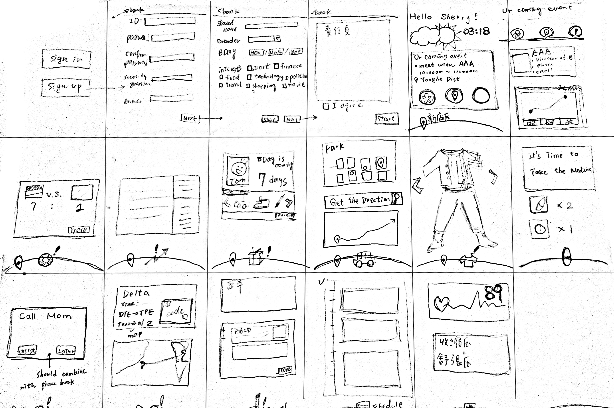
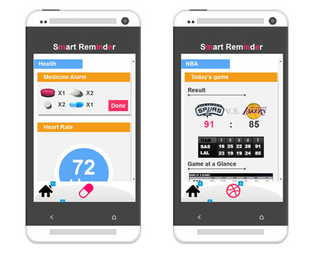
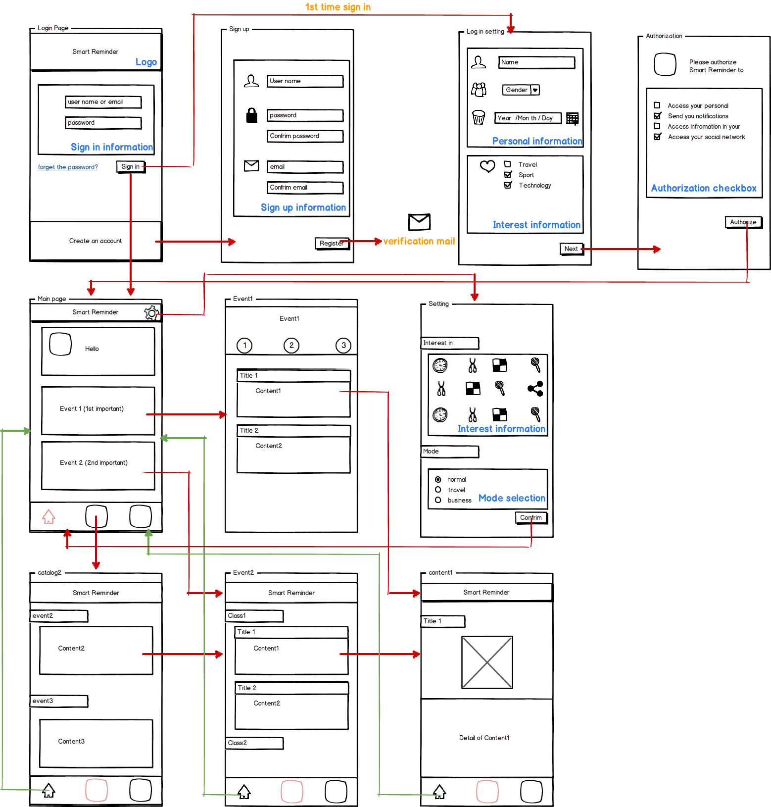

hTC Smart Reminder
HTC Corporation is a Taiwanese smartphone manufacturer and was founded in 1997. I participated in its “HTC DNA” summer internship program and worked for Global Platform Development Department (GPD) as a User Experience Designer. The goal of GPD is to expend the international market and especially focuses on Mainland China. In this project, GPD worked with hTC China branch in order to make the smartphone localization. I took the responsibility of conveying customer insights into product developing process and designing, wireframing and prototyping the new function on hTC smartphone.
I worked as a UX Designer and cooperated closely with the multifunctional team including engineers, designers and project managers. I put emphasis on communicating the design concept with my teammates. Besides, as a leader of the design project, I also manage the progress and project's time schedule.
— UX Researcher, UX Designer
- Competitor analysis
- Sketches
- Persona
- Scenarios & Storyboards
- Design Synthesis
- Design Defense
- Paper prototype
- Digital prototype
Approach

Step 1.
Every study should start from a well user study. To understand our target users, we did the competitor analysis and secondary research.

Step 2.
Furthermore, I also designed the questionnaire in order to get quantitative support.

Step 3.
After we caught several using behaviors and user habits, we went to the sketch and persona process and then the scenario and story board came after.

Step 4.
We conducted interviews to make sure that the design really fits users’ needs. At this stage, we corrected our design direction and redesign the wireframe and interaction.

Step 5.
At the end of this project, we made a paper lo-fi and a axure digital prototype.
Result

The team came up with a new concept about smart reminder that has a market position in between Apple Siri and Google now. The reminder gets the personal information from users’ smartphone and applies the seamless computing technology to foresee users’ needs then provide the most efficiency solutions. We successfully demoed the function in the final internship showcase. After finishing my internship, I also made a brief visualization summary of my work content.